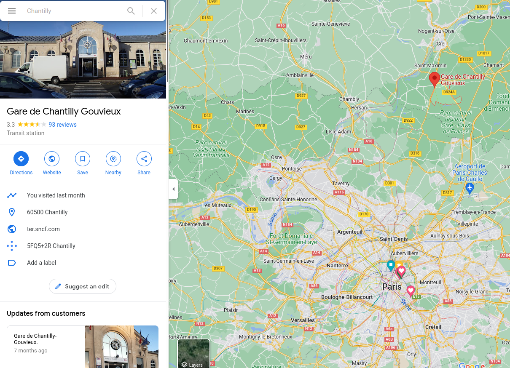

Hi Tatiana & Ivan
Please do the following:
Get a train to Chantilly
go to https://www.sncf-connect.com/en-en/
Destination: Chantilly Gouvieux
Departure: Gare du Nord (Paris) or a station of your choice
Map:
https://www.google.com/maps/place/Gare+de+Chantilly+Gouvieux/

Meet me at the station
Let me know on my mobile what time will you arrive.
Best times are in late morning, e.g. 10-11AM
Go to the garden
destination:
https://goo.gl/maps/wH99sMrZzCcGBBqN8
Path:

Go to the restaurant via the library square
Menu: https://hotel-parc-chantilly.com/wp-content/uploads/2021/12/Menu-A4-dec-15.pdf
Back to the train station

Take train back:
go to https://www.sncf-connect.com/en-en/
Destination: Chantilly Gouvieux
Departure: Gare du Nord (Paris) or a station of your choice
Taking a taxi
Unless you have way too much money, don't.
The road between Paris and Chantilly is very poor -- quite possibly this is by design! It takes much, much longer to come here by car than by train.